1-Р АЛХАМ
Самбарт нэвтрэх
Компьютер эсвэл утсаараа yaktag.org/admin хаягийг нээнэ. Утасны дугаар, нууц үгээ бичээд Нэвтрэх дарна.
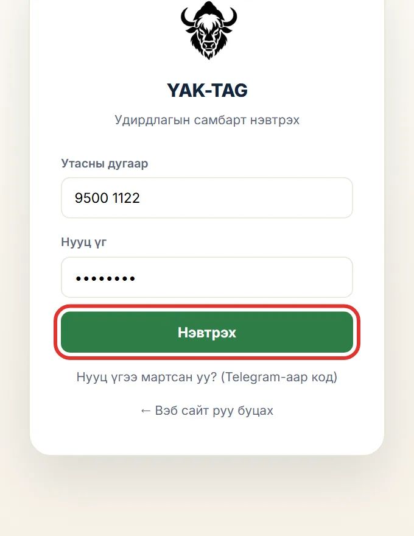
Ферм нээх, хүмүүс нэмэх, мал бүртгэж 3 зураг авах, вакцин бүртгэж малын эмчээр тамга даруулах, паспорт гаргах. Дэлгэц бүрийг яг байгаагаар нь үзүүлэв. Улаан хүрээтэй товчийг дарна.
Сайн байна уу! Би танд 14 бүлэг, 38 алхмаар бүгдийг дэс дарааллаар нь үзүүлнэ.
Эхлээд ферм, дараа нь ферм админ, дараа нь малчин, тэгээд таг, мал. Энэ дарааллыг алгасаж болохгүй: малчин ферм дээр, мал малчин дээр бүртгэгддэг. Дараа нь вакцин, паспорт.
Бүгдийг унших шаардлагагүй: доорх эрхийн хайрцаг бүрт тухайн хүний бүлгүүд бичээстэй.
Нэг фермийн бүх мал. Мал засах, вакцин бүртгэх, малыг ферм дотор шилжүүлэх.
Өөрийн мал. Шинэ таг дээр мал бүртгэх, сүү, тэжээл, зураг, төл, вакцин.
Фермийн оруулсан вакциныг шалгаад утсаараа цахим тамга дарна.
Өөрийн гарын авлага: Малын эмч
Компьютер эсвэл утсаараа yaktag.org/admin хаягийг нээнэ. Утасны дугаар, нууц үгээ бичээд Нэвтрэх дарна.

Дээд талын цэснээс Фермүүд-ийг сонгоод + Шинэ ферм товчийг дарна.
Доор одоо байгаа фермүүдийн жагсаалт харагдана.
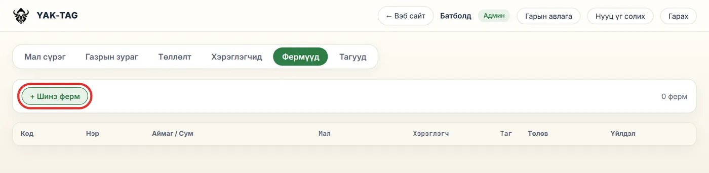
Тэгээд Үүсгэх.
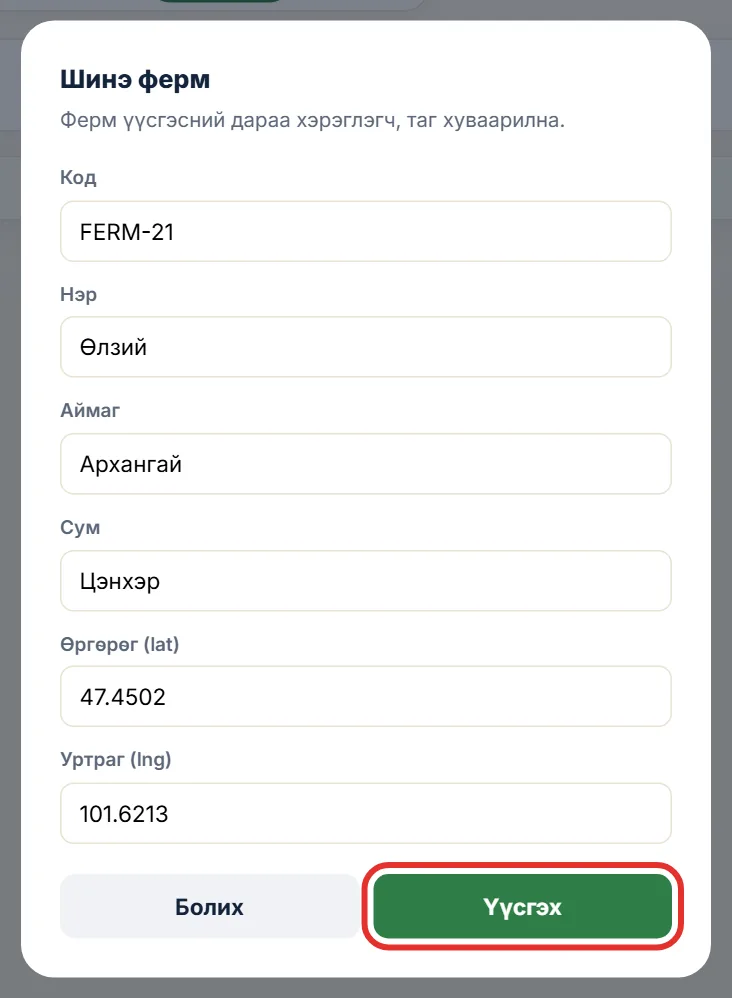
Шинэ ферм өөрийн өнгөтэй цэгтэйгээ жагсаалтад гарна.
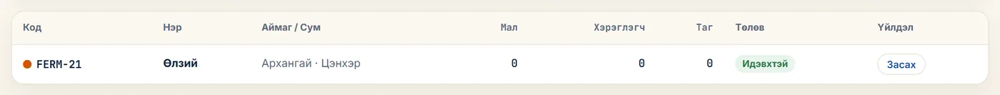
Тэгээд Үүсгэх.
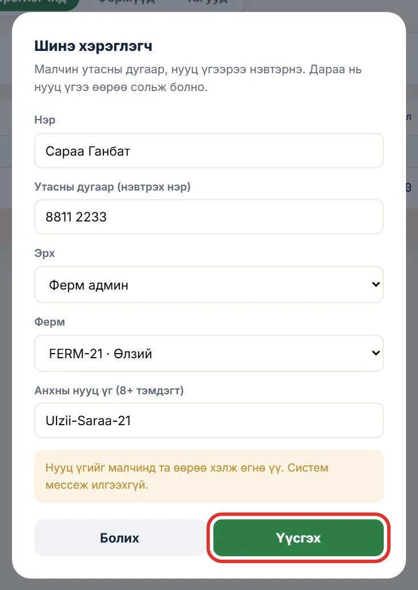
Дахин + Шинэ хэрэглэгч. Энэ удаа Эрх: Малчин, Ферм: мөн л тэр ферм. Үүсгэх.
Малчин бүрт өөр утасны дугаар хэрэгтэй.
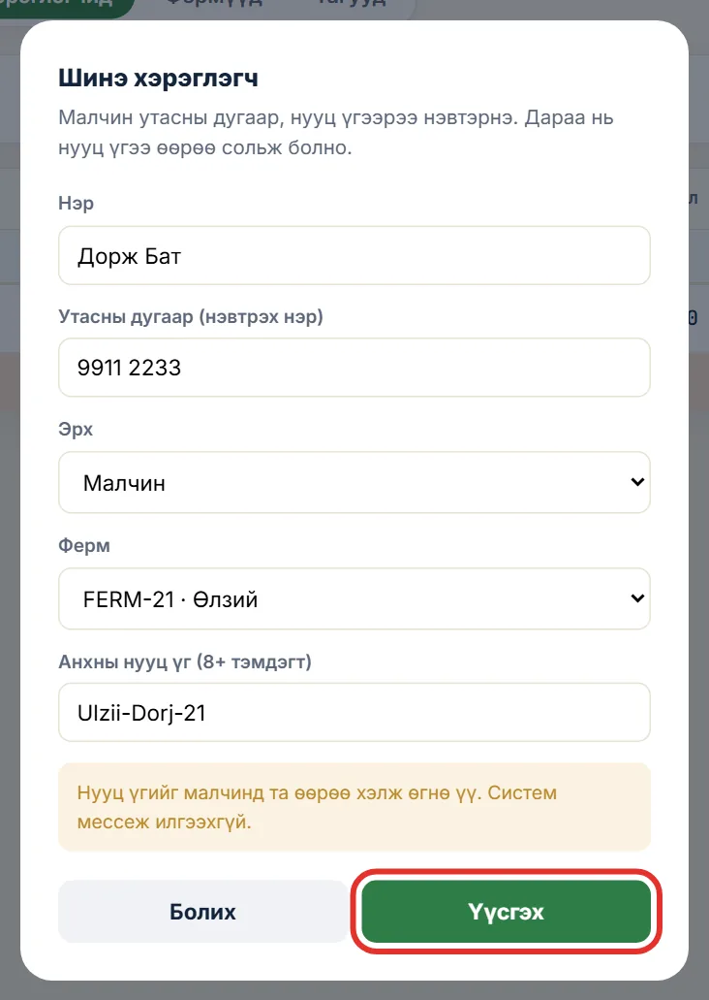
Жагсаалт ингэж эрэмбэлэгдэнэ: та (Админ) → таны ферм (фермийн өнгөөр) → ферм админ → малчид.
Хэн аль фермд байгааг өнгөөр нь шууд олно.
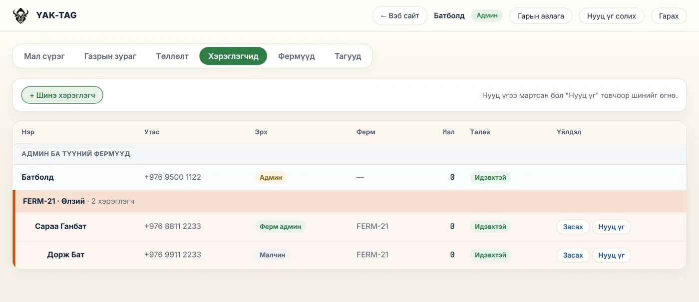
Энэ бол YAK-TAG таг. Дотор нь GeoNFC чип бий: батерейгүй, уншуулах мөчид утасны батерейгаар ажиллана. Утсаа ойртуулахад малын хуудас нээгдэж, утасны байршлаар хаана уншуулсан нь бичигдэнэ. Таг бүр өөрийн дугаартай, жишээ нь YT-008100.
Тагийн дугаарыг YAK-TAG таны ферм рүү бүртгэж, чипийг нь бичээд өгнө. Танд дугаартай, ашиглахад бэлэн тагууд уутаар ирнэ.
Тагуудаа малчдад хуваарилж өгнө.
Тагууд хэсэгт фермийн тагууд мал бүртгэгдээгүй («Хоосон» эсвэл «Бүртгэлгүй») төлөвтэй харагдана. Малчин мал бүртгэмэгц «Бүртгэлтэй» болно.
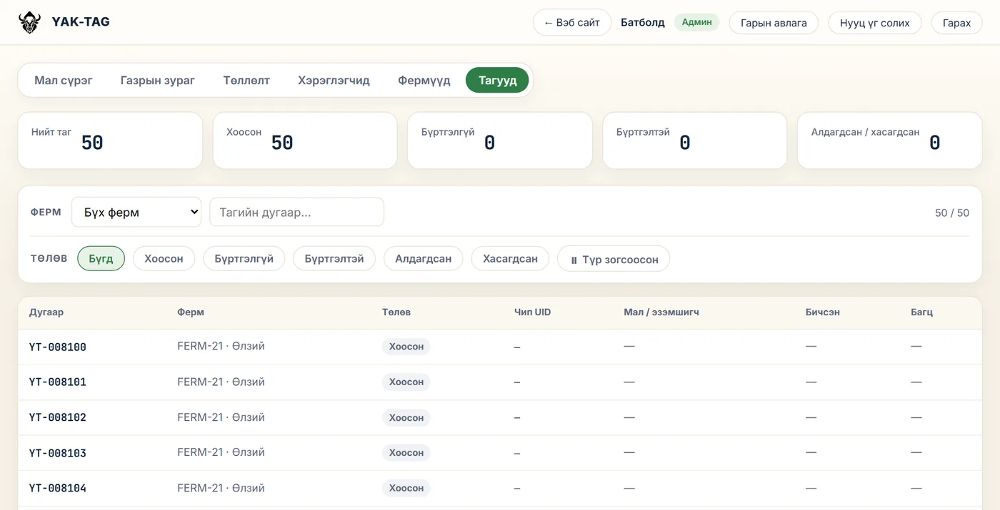
Одоо малчны утас дээр. Эхний малыг малчинтай хамт бүртгэж үзүүлээрэй: 2 минут зарцуулаад дараа нь олон дуудлагаас зайлсхийнэ.
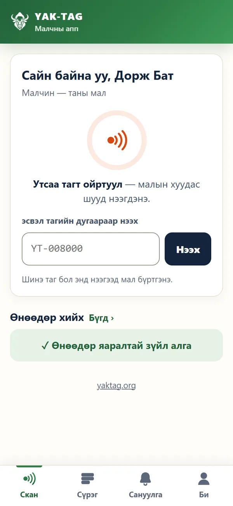
Утсаа тагт 1–3 см ойртуулна. «Шинэ таг» гэж гарна. Мал бүртгэх дарна.
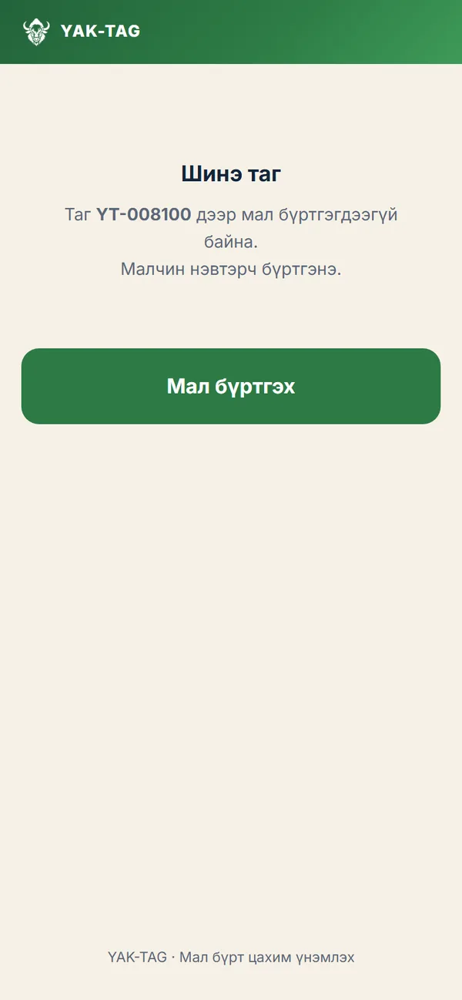
Малчны утасны дугаар, админаас авсан нууц үгийг бичээд Нэвтрэх. Дараагийн удаа дахин асуухгүй.
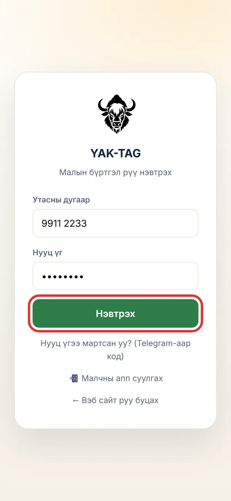
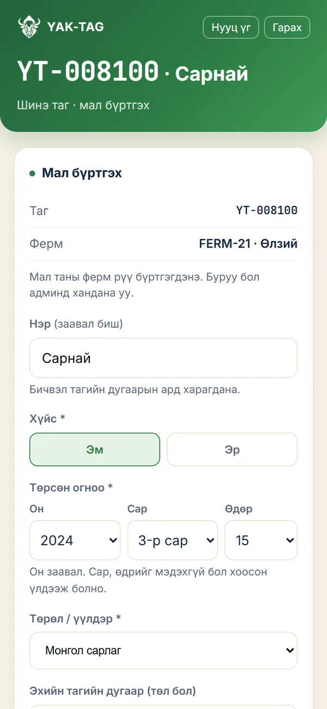
Байршил өөрөө тогтоогдоно. Бүртгэх дарна.
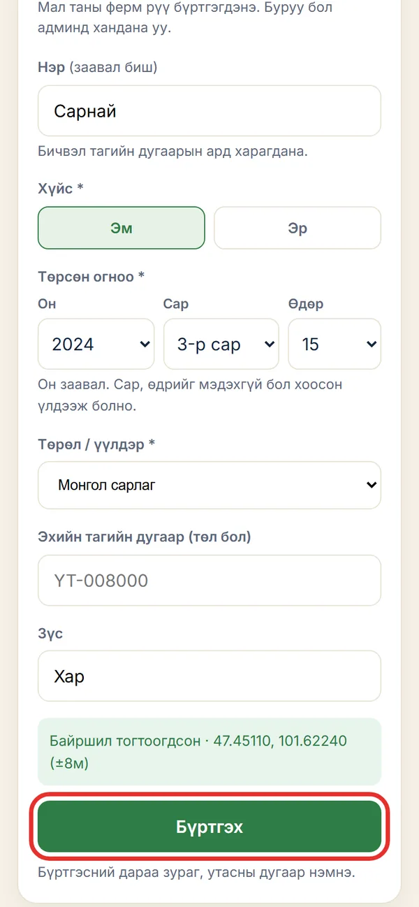
Тагийг малд зүүгээд дахин уншуулж шалгана. Малын хуудас нээгдэж, дээр нь «YT-008100 · Сарнай» гэж гарвал болсон.
Малын хуудасны Зураг товчийг дарна. 3 товч бий: Бүтэн бие Хамар Тэмдэг. Нэгийг нь сонгоод Камер нээх. Гурвууланг нь ээлжлэн авна.
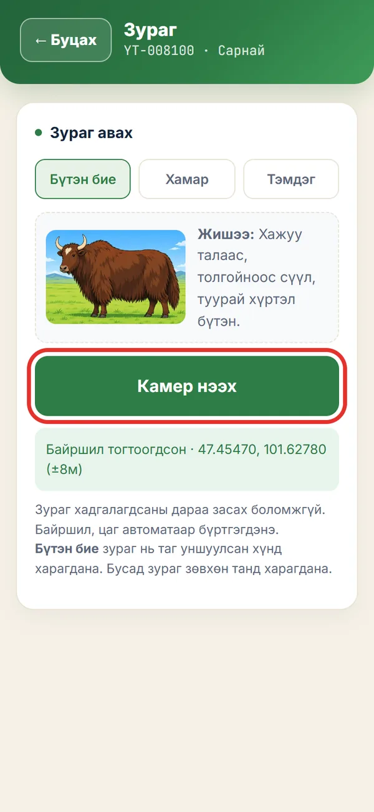
Мал алга болоход тагийг уншуулсан хүн энэ зургийг харж, «яг энэ мал мөн» гэж таньдаг.
Хамрын хээ хүний хурууны хээ шиг мал бүрт өөр байдаг. Таг унах, солигдох үед малыг яг таних баталгаа болно.
Хулгай, маргааны үед «энэ миний мал» гэдгийг батлах нэмэлт нотолгоо болно.
Холбоо барих утас мөрийг дарна. Утсаа бичээд Хадгалах. Дугаар хуудсан дээр бичигдэхгүй: тагийг уншуулсан хүнд «Эзэмшигч рүү залгах» товч гарна.
Дугаарыг түгжих: түгжсэний дараа зөвхөн ферм админ өөрчилнө.
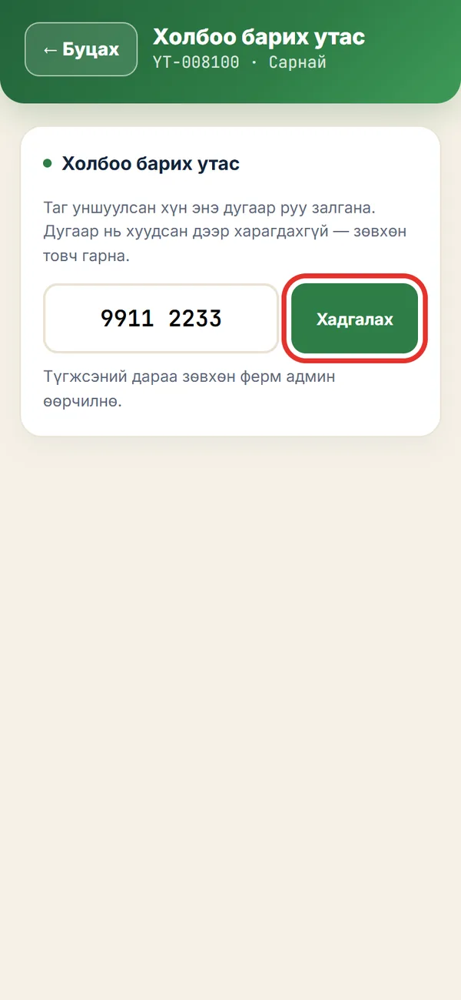
Мэдээлэл мөрийг дарахад эзэмшигч, нэр, төрсөн огноо, үүлдэр харагдана. Буруу бол Нэр, төрсөн огноо засах.
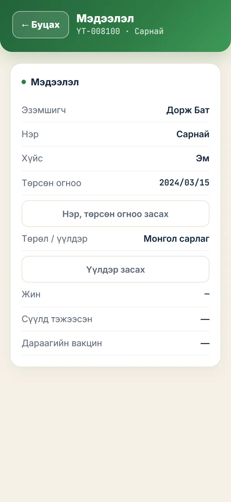
Малчны аппын доод талын Сүрэг-ийг дарахад Миний мал жагсаалт гарна. «YT-008100 · Сарнай» нэмэгдсэн байна. Мал дээр дарахад малын хуудас нээгдэнэ.
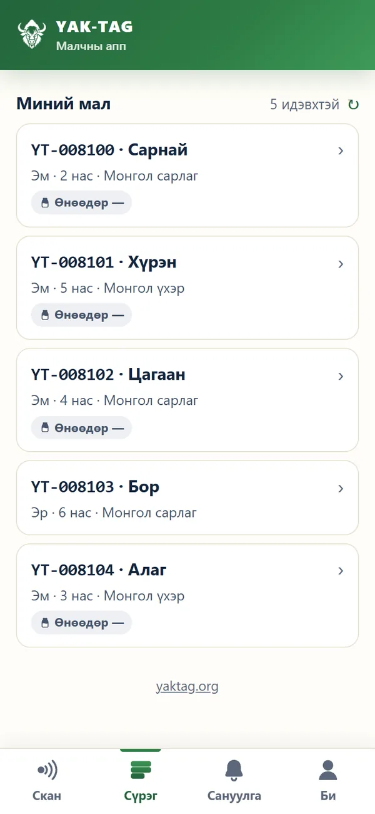
Telegram холбосон хүнд мал алга болоод хэн нэгэн тагийг нь уншуулмагц хаана, хэзээ гэдэг нь шууд ирнэ. Үнэгүй. Хүн бүр өөрийн утаснаас нэг удаа холбоно: ферм админ самбараас, малчин аппаас.
Утсанд Telegram апп суусан байх ёстой.
Ферм админ yaktag.org/admin-д өөрийн утас, нууц үгээр нэвтэрнэ. Дээд талд Telegram товчийг дарна.
Telegram холбох дарахад Telegram нээгдэнэ. YAK-TAG ботын доод талын Start (Эхлэх) товчийг дарна. Бот ингэж хариулна:
Холбоос 30 минут хүчинтэй. Хугацаа нь дуусвал товчийг дахин дарна.
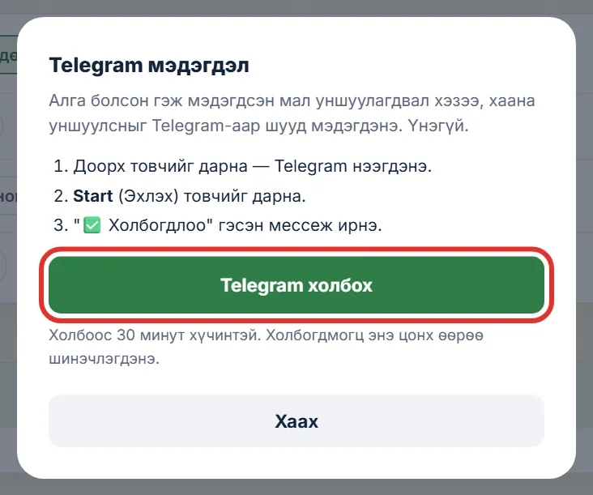
Самбарын цонх өөрөө «✓ Холбогдсон» болно. Туршилт илгээх дарахад Telegram-д туршилтын мессеж ирнэ:
Зогсоох бол Салгах товч эсвэл Telegram дээр /stop.
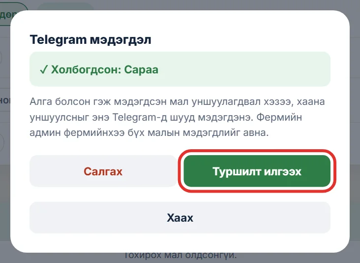
Малчин өөрийн утсанд малчны аппыг (yaktag.org/app) нээгээд доод талын Би-г дарна. Telegram холбох картын Telegram холбох → Telegram нээх → Telegram дээр Start.
Холбогдмогц карт алга болж «✓ Telegram холбогдсон» гэж гарна. Малын хуудасны дээд талын Telegram товчоор ч холбож болно.
| Мэдэгдэл | Хэнд ирэх |
|---|---|
| Алга болсон гэж мэдэгдсэн мал уншуулагдвал: хаана, хэзээ, хэн | Эзэмшигч малчин, ферм админ, Админ. Уншуулсан хүнд ирэхгүй. Нэг малд 10 минутад нэг удаа. |
| Вакцинд тамга даруулах хүсэлт | Фермийн малын эмч. Нэг фермээс 10 минутад нэг удаа. |
| Нууц үгээ мартвал сэргээх код | Нууц үгээ мартсан хүн өөрөө |
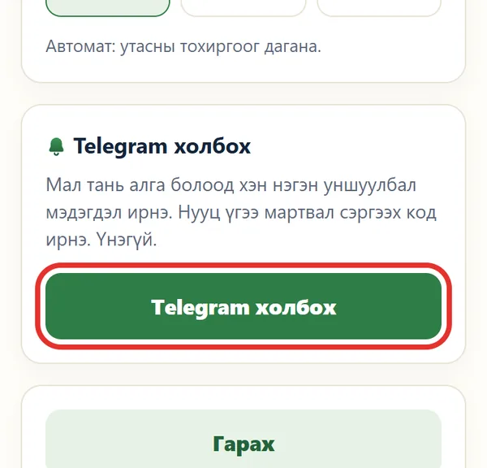
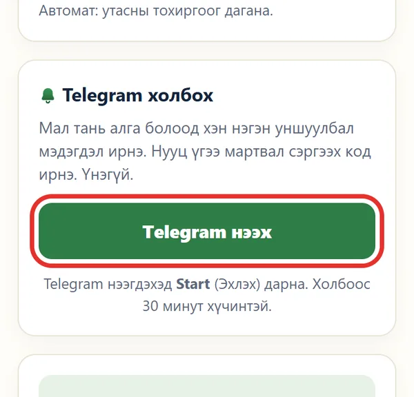
Самбарын Мал сүрэг хэсэгт шинэ мал гарна. Дугаар, нэр, эзэмшигчээр нь хайж болно.
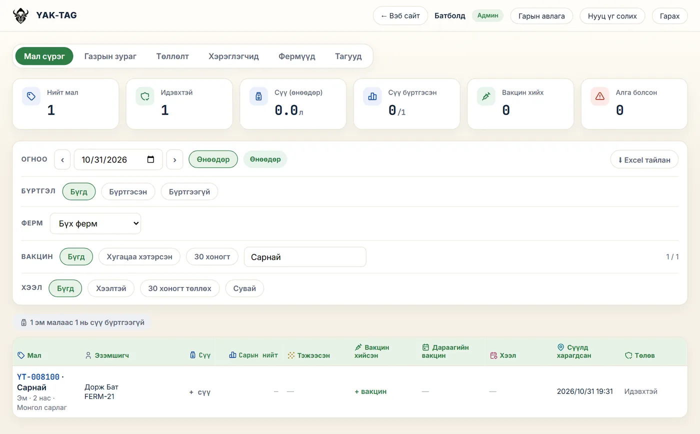
Газрын зураг дээр мал бүртгэсэн газартаа фермийн өнгөөр харагдана.
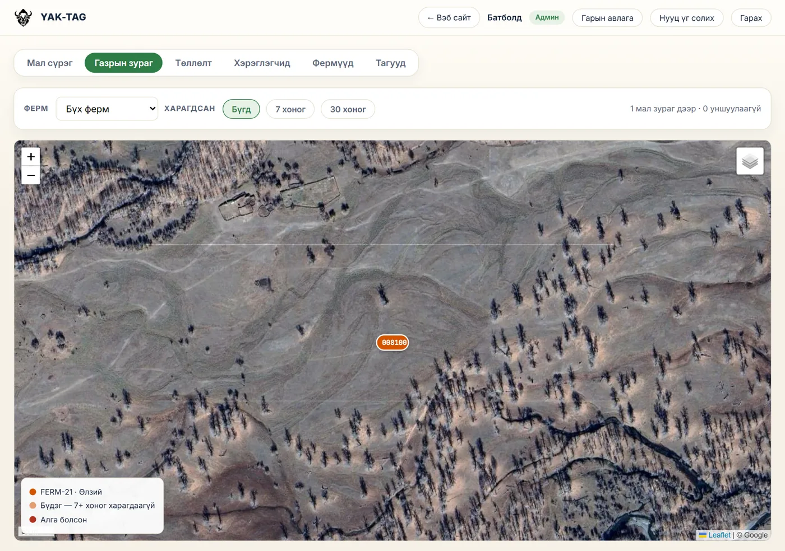
Малын хуудас одоо апп шиг: урт гүйлгэх хэрэггүй. Хэрэгтэй товчоо дарахад зөвхөн тэр хэсэг нээгдэнэ.
Тагийг уншуулахад малын хуудас нээгдэнэ. Дээр нь малын дугаар, нэр, нас, эзэмшигч.
Товч дарахад зөвхөн тэр хэсэг нээгдэнэ. Дээд талд нь хэсгийн нэр, малын дугаар бичээстэй.
Буцахдаа ← Буцах эсвэл утасны «буцах» товчийг дарна.
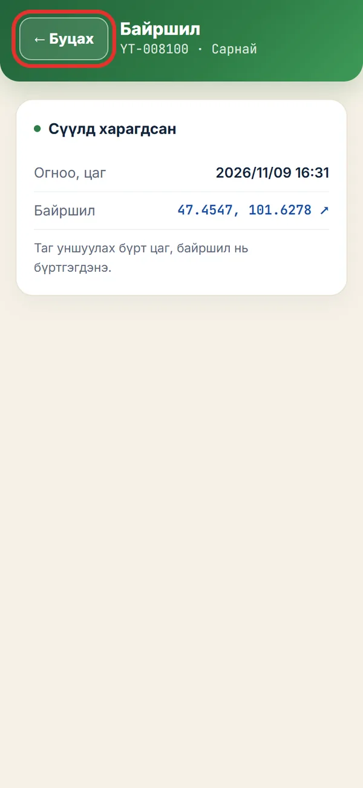
Вакцин хийсэн өдрөө малын хуудсанд бүртгэнэ. Тэгээд фермийн малын эмч утсаараа цахим тамга дарж баталгаажуулна. Цаас, бэх хэрэггүй.
Малын хуудасны Вакцин товчийг дарна.
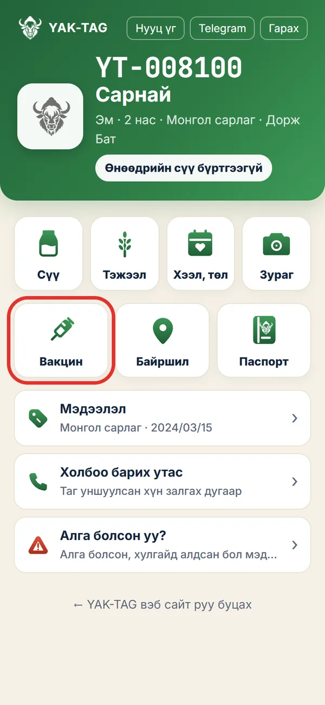
Вакцинжуулалтын бүртгэл нээгдэнэ: дээр нь малын мэдээлэл, доор нь хийсэн вакцинууд. Анх удаа «Вакцины бүртгэл алга» гэж гарна.
+ Вакцин бүртгэх дарна.
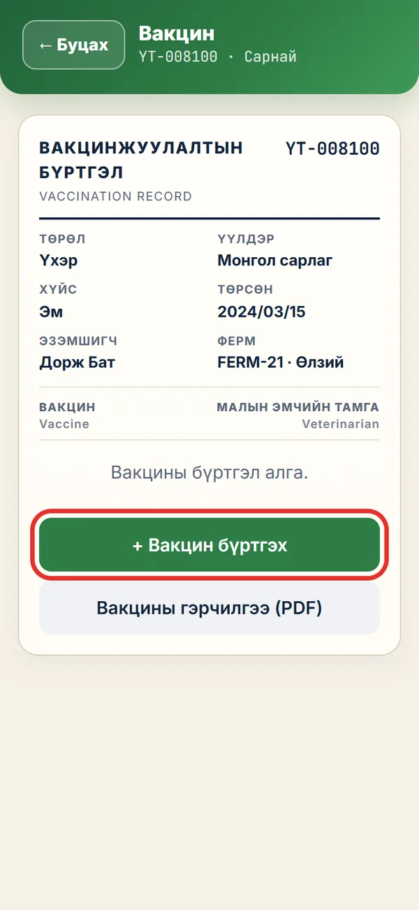
Тэгээд Хадгалах.
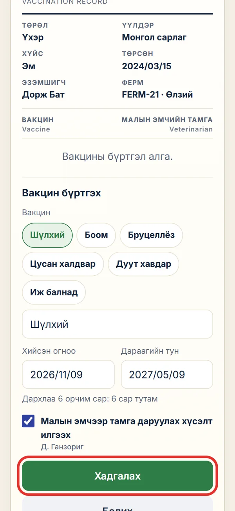
Вакцин жагсаалтад нэмэгдэж, баруун талд нь шар «Эмчид илгээсэн» гарна. Малын эмчид Telegram-аар мэдэгдэл очно.
Хүсэлт илгээгээгүй вакцинд Эмчид илгээх товч гарна: дараа нь дарж болно.
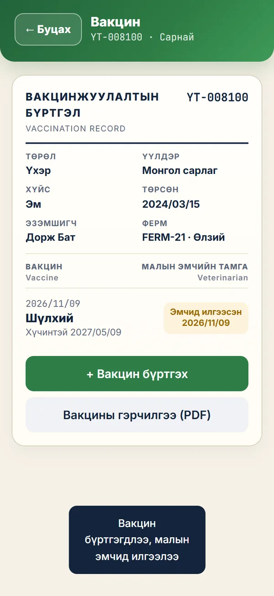
Малын эмч тамга дармагц шарын оронд эмчийн цэнхэр тамга, нэр, МЭНС дугаар гарна. Вакцины серийн дугаар нэмэгдэнэ.
Тамга дээр дарахад тамга шалгах хуудас нээгдэнэ.
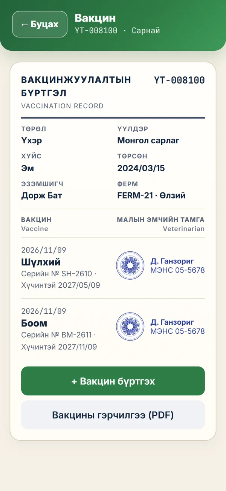
| Вакцин | Дараагийн тун |
|---|---|
| Шүлхий | 6 сарын дараа |
| Боом | 1 жилийн дараа |
| Бруцеллёз | Төлд нэг удаа, дахин хийхгүй |
| Цусан халдвар | 6 сарын дараа (тосон вакцин бол 1 жил) |
| Дуут хавдар | 1 жилийн дараа. Анх удаа 2 тун, 3–6 долоо хоногийн зайтай |
| Иж балнад | Вакцины зааврын дагуу |
Огноо вакцин сонгоход өөрөө гарна. Малын эмч өөрөөр зөвлөвөл гараар засна.
Нэг өдөр олон малд нэг вакцин хийсэн бол мал бүрийг тусад нь оруулах хэрэггүй: самбараас нэг дор бүртгэнэ.
yaktag.org/admin → Мал сүрэг хүснэгтийн дээд талын + Вакцин товчийг дарна.
Хадгалах (4): 4 малд тус бүр бүртгэгдэнэ, малын эмчид нэг мэдэгдэл очно.
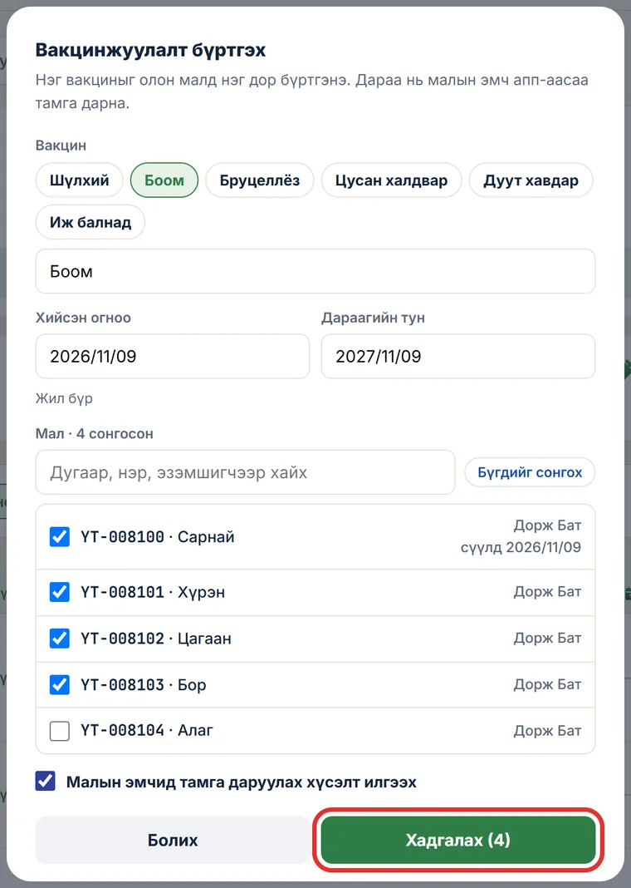
Самбарын дээд талын Вакцин хавтан 2 тоо харуулна:
Хоёулаа нийлээд идэвхтэй малын тоо. Тоон дээр дарахад тэр малуудын жагсаалт гарна.
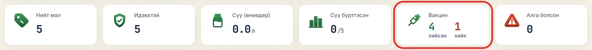
Малын хуудасны Паспорт товч. Малын паспорт нэг хуудас PDF болж гарна: таних мэдээлэл, зураг, эзэмшигч, вакцин.
Вакцин хэсэгт 2 QR: вакцины гэрчилгээ, малын эмчийн тамга. Доод талын QR паспорт жинхэнэ эсэхийг шалгана.
PDF татах эсвэл Илгээх (Telegram, Messenger…).
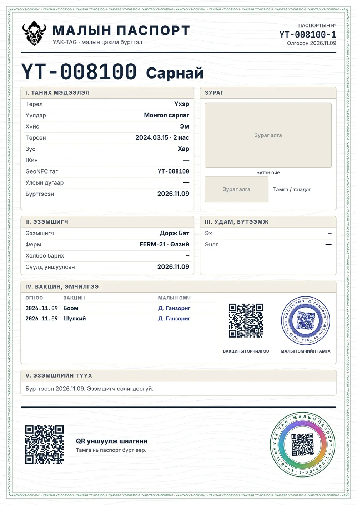
Вакцин хэсгийн доод талын Вакцины гэрчилгээ (PDF) товч. Бүх вакцин нэг хуудсанд: огноо, вакцин, серийн дугаар, хүчинтэй хугацаа, малын эмч.
Доор нь эмч бүрийн тамга: 2 эмч бол 2 тамга. Тамганы QR тухайн эмчийн баталгаажуулсан вакциныг харуулна.
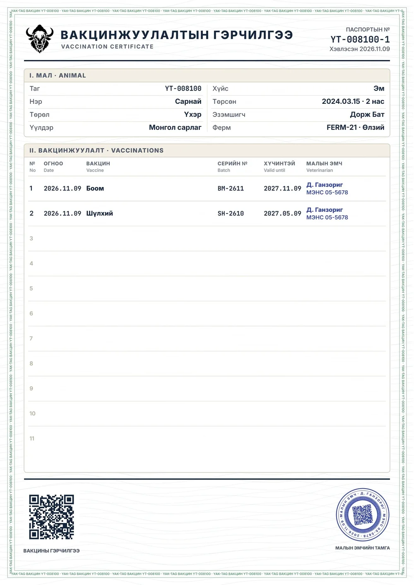
Малын эмчийг YAK-TAG-ийн ерөнхий админ нэмнэ. Бидэнд дараах мэдээллийг өгнө:
Эмч yaktag.org/app-д нэвтэрч, утсаараа тамга дарна. Эмчид өөрийн гарын авлагыг өгнө:
Малын эмчийн гарын авлага →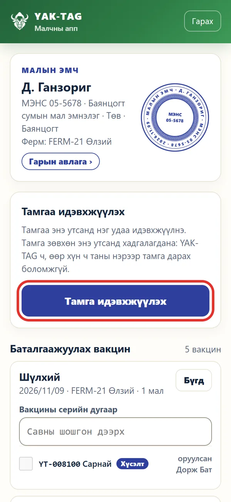
Тусламж: 8863 2033 · yaktag.org